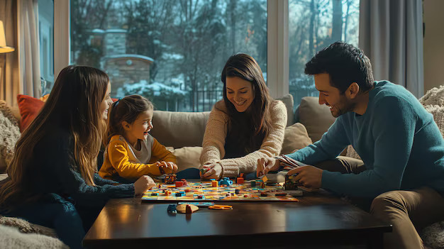

अपने सपनों का घर खरीदें द्वारकाधीश में:हरित जीवन, बेहतर भविष्य
सततता की ओर एक कदम
आज की दुनिया में यह सुनिश्चित करना बेहद ज़रूरी है कि हम अपने पर्यावरण की रक्षा कर रहे हैं, न कि उसकी समस्याओं में वृद्धि कर रहे हैं। इसलिए, सतत जीवनशैली को प्राथमिकता देना अब बहुत महत्वपूर्ण हो गया है। व्यक्तिगत प्रयासों के अलावा, आप अपने घर से संबंधित सोच-समझ कर किए गए चुनावों से प्रकृति के संरक्षण में योगदान कर सकते हैं। वर्षा जल संचयन, सीवेज उपचार संयंत्र (STP), और सौर ऊर्जा जैसी सुविधाएँ आपको पर्यावरण की रक्षा करने और एक हरित भविष्य को बढ़ावा देने में मदद करती हैं। इन पारिस्थितिकी मित्र उपायों को अपनाकर, आप न केवल अपनी जीवनशैली को बेहतर बना रहे हैं, बल्कि पृथ्वी पर सकारात्मक प्रभाव भी डाल रहे हैं।
निर्माता की विश्वसनीयता
नाइगांव में एक 1 BHK फ्लैट खरीदना, विशेष रूप से जो अभी निर्माणाधीन हो, एक बड़ा जोखिम हो सकता है। कई खरीदारों को कंपनियों द्वारा घर देने का वादा पूरा न करने के कारण निराशा का सामना करना पड़ा है। ऐसे जोखिमों को कम करने के लिए, यह जरूरी है कि आप एक विश्वसनीय निर्माता को चुनें, जिसकी परियोजनाओं का रिकॉर्ड सफलता में लगातार रहा हो। सौभाग्य से, कई प्रतिष्ठित बिल्डर्स वर्तमान में नाइगांव में परियोजनाएँ विकसित कर रहे हैं, जो संभावित खरीदारों के लिए भरोसेमंद विकल्पों की एक विस्तृत श्रृंखला प्रदान करते हैं।
वास्तुकला की सुंदरता
आपका पता आपको गर्व और संतोष की भावना देना चाहिए, जब भी आप इसके बारे में सोचें। नाइगांव ईस्ट में एक 1 BHK फ्लैट एक सुंदर आश्रय बन सकता है, लेकिन अगर इसका बाहरी हिस्सा उदासीन या अव्यवस्थित है, तो यह आपकी समग्र खुशी को प्रभावित कर सकता है। यही कारण है कि ऐसे प्रोजेक्ट्स का चुनाव करना आवश्यक है जो सौंदर्यशास्त्र को प्राथमिकता देते हैं, जिससे भवन को एक भव्य और दृष्टिगत रूप से आकर्षक रूप मिले। एक सोच-समझ कर डिज़ाइन किया गया बाहरी हिस्सा संपूर्ण जीवन अनुभव को ऊंचा कर सकता है, जिससे आपका घर सिर्फ एक रहने की जगह नहीं, बल्कि निरंतर आनंद का स्रोत बन जाए।
निष्कर्ष
निष्कर्ष के रूप में, एक ऐसा घर चुनना जो सततता को प्राथमिकता देता है, केवल आपके भविष्य में निवेश नहीं है, बल्कि ग्रह की भलाई में भी योगदान है। वर्षा जल संचयन, सौर ऊर्जा, और सीवेज उपचार संयंत्र जैसी सुविधाओं के साथ, आप एक हरित, स्वच्छ दुनिया में योगदान कर सकते हैं, जबकि एक आधुनिक, पारिस्थितिकी मित्र जीवनशैली का आनंद लेते हुए। सोच-समझ कर किए गए चुनावों के माध्यम से, आप आने वाली पीढ़ियों के लिए एक सतत भविष्य बनाने में महत्वपूर्ण भूमिका निभाते हैं।
Contact us
+91 72088 43484 / +91 72088 43487
kkcreateandbiuld@gmail.com
Radha Nilaya, Plot No. 164/2,
Bapane Village, Chandrapada Road,
Naigaon (E) - 401208,
Maharashtra, India.